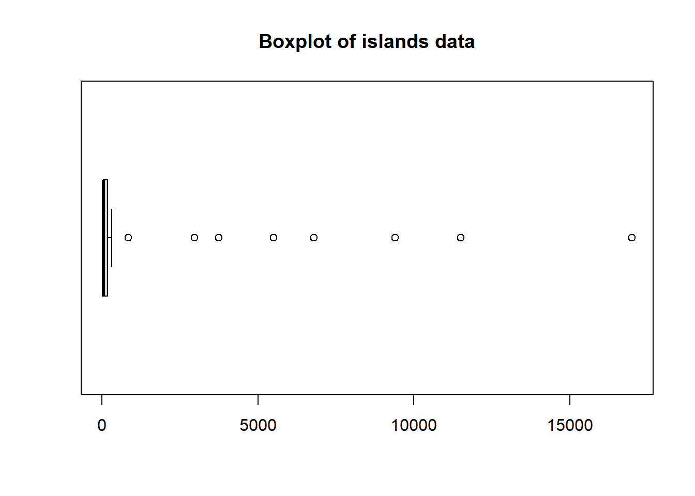

SKEW=((Hu-M)-(M-Hl))/((Hu-M)+(M-Hl))SKEW # +이기에 Skewed to the right
[1] 0.7431193
(2) letter value display와 boxplot을 만들고 자료의 특성을 요약하여라.
# letter value displaysource("http://mgimond.github.io/ES218/es218.R")lvd=lsum(islands)lvd
letter depth lower mid upper spread
Iceland M 24.5 41.0 41.00 41.0 0.0
Tierra del Fuego H 12.5 20.0 101.75 183.5 163.5
Taiwan E 6.5 14.5 1685.50 3356.5 3342.0
Prince of Wales D 3.5 13.0 4052.75 8092.5 8079.5
Hainan C 2.0 13.0 5759.50 11506.0 11493.0
lvd[,4]
[1] 41.00 101.75 1685.50 4052.75 5759.50
# boxplotboxplot(islands,horizontal=T,main="Boxplot of islands data")

boxplot(log(islands))
letter value display median의 값은 41, Upper Hinge의 값은 183.5, Lower Hinge의 값은 20으로 확인 됨. depth가 24.5까지 들어가고 있다. H-Spread의 값은 163.5이고 이를 통해 계산한 Pseudo Variance값은 163.5/1.35=121.11 로 계산된다. mid 값이 41, 101.75, 1685.50, 4052.75, 5759.50 순으로 증가하고 있기 때문에 이 자료의 분포는 Skewed to the right이라고 생각하면 좋다.
box plot Symmetric하지 않고, Skewed to the right 하여 극단적으로 큰 값들이 존재한다는 것을 존재한다는 것은 Box Plot을 통해 재확인할 수 있다. Median의 위치는 매우 작아서 확인이 불가능하다. Spread는 약 11000 정도인 것으로 보이며 Whisker의 크기도 거의 확인할 수가 없다. 위의 문제에서 계산한 Outer Fence의 값은 -470과 674인데 Outer Fence밖의 Far Out(Outliers)값이 8개 존재하는 것을 확인 할 수 있다. 로그변환이나 지수변환을 통해서 데이터들을 Symmetric하게 만들고 Spread를 확인할 수 있게 만들어 데이터를 조금 더 해석하기 용이하게 해야 한다.
2번
Ozone 자료
바람이 세게 불 때와 그렇지 않을 때로 자료를 나누어 오존량의 letter value display를 각각 만들고 mid와 spread 칼럼의 값과 stem-and-leaf display와 boxplot의 notch등을 이용하여 두 집단의 오존량을 비교하여라.
# 자료 요약 / Five Numbers / Boxplotsummary(airquality$Ozone)
Min. 1st Qu. Median Mean 3rd Qu. Max. NA's
1.00 18.00 31.50 42.13 63.25 168.00 37
fivenum(airquality$Ozone)
[1] 1.0 18.0 31.5 63.5 168.0
boxplot(airquality$Ozone,title="Boxplot of Ozone Variable")
Median 값에서 Upper Hinge나 Lower Hinge 까지의 거리에 비해서 최대값까지의 거리가 길다는 것을 확인할 수 있다. 따라서 주어진 자료의 분포는 Skewed to the right이라는 것을 확인할 수 있다. Boxplot상 Outer Hinge 밖의 Outlier가 2개 정도 존재하고 있음을 확인할 수 있다.
# 바람이 세게 부는 집단과 그렇지 않은 집단의 분류# Wind: Average wind speed in miles per hour at 0700 and 1000 hours at LaGuardia Airport# Ozone: Mean ozone in parts per billion from 1300 to 1500 hours at Roosevelt Islandw_med=median(airquality$Wind)hist(airquality$Wind,main="Histogram of Windspeed(mph)",xlab="Windspeed",breaks=20)abline(v=w_med,col="red",lty=2)
higherwind=airquality$Wind>=w_medncol(airquality[airquality$Wind==w_med,]) # Median Value를 갖는 관측치의 수
[1] 6
#정의: 바람이 세게 부는 집단은 Median값보다 바람이 세게 부는 집단, 바람이 약하게 부는 집단은 Median값보다 바람이 약하게 부는 집단strongwind=airquality[higherwind,] #바람이 세게부는 집단weakwind=airquality[!higherwind,] #바람이 약하게 부는 집단 nrow(strongwind); nrow(weakwind) #Windspeed의 Median Value를 Strongwind에 포함시킴
[1] 83
[1] 70
강한 바람의 그룹은 83개의 데이터를 가지고 있는 것에 비해, 약한 바람의 그룹은 70개의 데이터를 가지고있는데 여기서의 차이는 바람속도가 Median에 속하는 Observation들이 강한 바람을 가진 그룹으로 분류되었기 때문이다.
# Letter Value Displaysource("http://mgimond.github.io/ES218/es218.R")lsum(strongwind$Ozone)
letter depth lower mid upper spread
1 M 32.0 21 21.00 21.0 0.0
2 H 16.5 13 23.75 34.5 21.5
3 E 8.5 9 26.75 44.5 35.5
4 D 4.5 7 35.50 64.0 57.0
5 C 2.5 5 39.25 73.5 68.5
lsum(weakwind$Ozone)
letter depth lower mid upper spread
1 M 27.0 59.0 59.00 59.0 0.0
2 H 14.0 30.0 57.00 84.0 54.0
3 E 7.5 20.0 61.25 102.5 82.5
4 D 4.0 16.0 67.00 118.0 102.0
5 C 2.5 13.5 71.00 128.5 115.0
바람 세기가 약한그룹의 H-Spread는 54인 반면 바람세기가 강한 그룹의 H-Spread는 21.5이므로 바람세기가 약한 그룹의 데이터가 조금 더 변동성이 큰 것으로 확인된다. Median 값의 경우 바람세기가 강한 그룹은 21, 바람세기가 약한그룹은 59이므로 바람세기가 약한 그룹에 속하는 Observation들의 오존측정량이 더 높은 경향성을 보인다는 것을 확인 할 수 있다. (바람에 의해서 오존들이 흩어지게 되면서 측정치가 상대적으로 낮게 나타나는 것으로 보인다.)
Kurtosis: E-spread/H-spread-1.705 바람세기가 약한 그룹: (82.5/(54))-1.705=-0.1772222 바람세기가 강한 그룹: 35.5/21.5-1.705=-0.05383721 첨도가 두 집단에서 모두 음수이기 때문에 정규분포보다 평평한 성질을 가지고 있음이 확인되어 진다.
Skewedness: 두 그룹의 Display에서 mid 값이 점차 커지고 있는 상황이므로 두 그룹 자료의 분포들은 Skewed to the right되어 있다고 볼 수 있다.
# stem and leaf # install.packages("aplpack")stem(strongwind$Ozone)
The decimal point is 1 digit(s) to the right of the |
0 | 146778999
1 | 011223333444468889
2 | 001111233447889
3 | 012245679
4 | 044455
5 | 2
6 | 35
7 | 16
8 | 9
stem(weakwind$Ozone)
The decimal point is 1 digit(s) to the right of the |
0 | 716668
2 | 0033338025679
4 | 16789099
6 | 1446337889
8 | 024551677
10 | 8058
12 | 25
14 |
16 | 8
맨 마지막의 Stem and leaf plot을 기준으로 설명하고자 한다. 강한 바람 집단과 약한 바람 집단의 분포를 간단하게 살펴보면 강한 바람 집단의 경우 한개의 봉우리로 이루어져 있는데 반해 약한 바람 집단은 두개의 봉우리를 이루고 잇는 것을 확인할 수 있다. 강한 바람 집단은 Stem 1을 기준으로 leaf들이 Cluster 되어있는데 반해 약한 바람 집단은 Stem 2와 Stem 7의 두개의 Cluster로 이루어져 있으므로 조금 더 자료들이 넓게 퍼져있는 것이 확인되어진다. 중간에 Blank된 부분은 없는 것으로 보이며 Stem 12,13의 Leaf들의 존재는 Outlier의 존재 가능성을 확인하여 준다. 실제로 Boxplot을 그려 Outer Fence내에 자료값들이 존재하는지 여부를 확인하고자 한다.
#Boxplotairquality$Group<-ifelse(airquality$Wind>=w_med,"Faster","Slower")boxplot(airquality$Ozone~airquality$Group,main="Comparison b/w Different Windspeed Groups",col=c("Red","Blue"),notch=T)library(ggplot2)
ggplot(data=airquality,aes(x=Group,y=Ozone,fill=Group))+geom_boxplot(notch=T)+labs(title="Comparison b/w Different Windspeed Groups")
두 집단의 Notched Interval이 서로 겹치지 않기 때문에 두 Median은 신뢰수준 5% 수준에서 서로 유의미하게 차이를 보인다고 볼 수 있다. 바람이 더 센 그룹의 오존량이 더 적다고 보는 것은 따라서 타당하다. 바람 속도가 빠른집단에서는 Outlier가 세개, 느린집단에서는 두개가 발견되었으며 위에서 확인하였던 것 처럼 두 그룹 모두 오존량의 데이터들은 Skewed to the right되어 있다. (Whisker의 길이는 바람속도가 느린 집단에서 더 긴것으로 확인되어진다. )
바람속도가 빠른 집단과 느린집단을 분류하는 기준이 조금 더 명확해야 한다. 히스토그램을 그려 두 집단을 분류해보고자 하였다. 하지만, Median값이 6개로 여러개가 관측되는 상황이기 때문에 Median값에 해당하는 관측치들을 어떤 집단에 분류하느냐에 따라 분석결과가 달라지게 되는 문제가 존재하므로 바람속도와 오존량의 관계에 대한 사전지식을 가지고 분석을 진행하는 것이 더 의미있는 분석결과를 도출할 수 있을 것이라고 생각한다. (데이터의 수가 서로 동일하지 않다는 문제가 존재)
#3번 통계청 자료 싸이트에서 교과서 4.6절의 자료를 최신 것으로 얻어 교과서에서의 분석을 따라하고 달라진 점들을 보고하라.
library(ggplot2)# 교과서 자료 활용pop2000<-read.csv("https://raw.githubusercontent.com/SangwonJu/data/0676d5a195bc0198085765d26b646351a858db74/%EA%B4%91%EC%97%AD%EC%8B%9C-%EA%B5%AC%20%EC%9D%B8%EA%B5%AC.csv",header=T)str(pop2000)